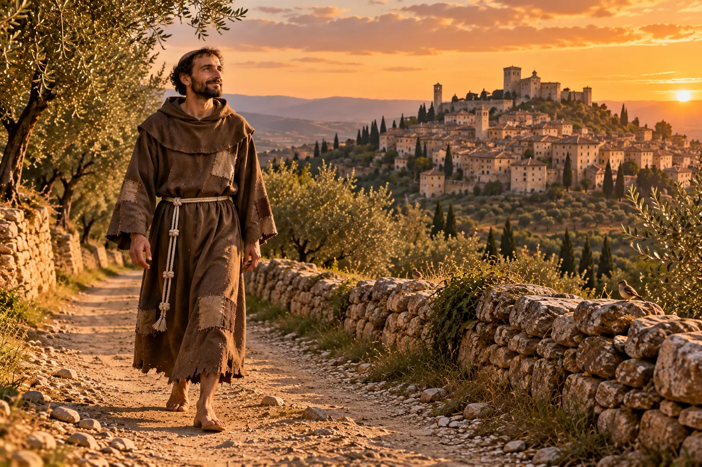
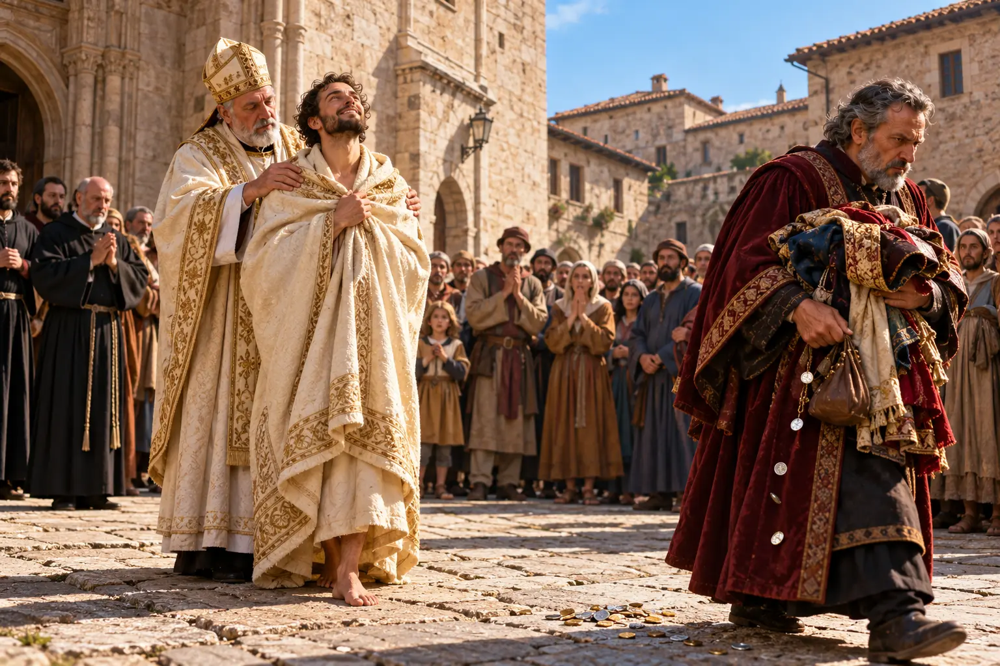
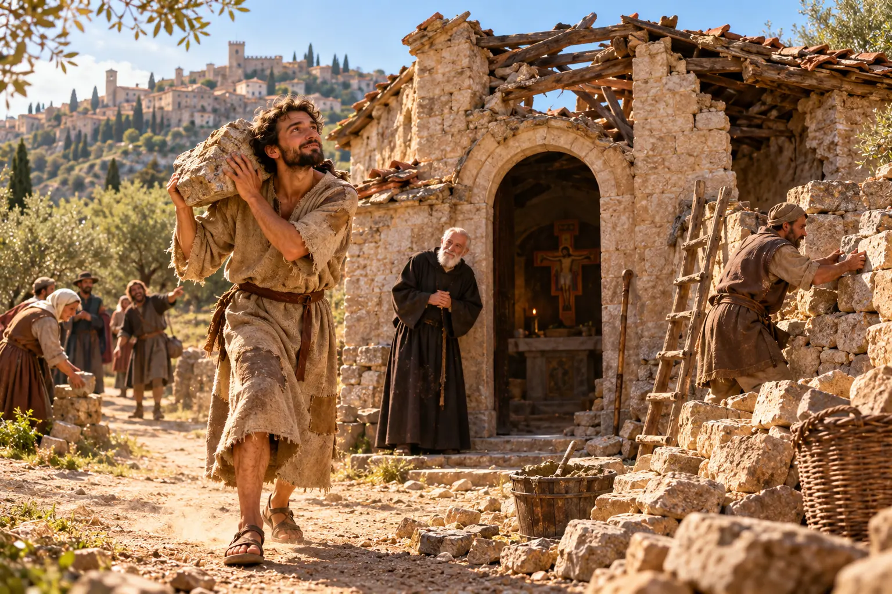

São Francisco de Assis: do filho do rico comerciante ao Pobrezinho de Deus
Em 2026, a Igreja celebra os 800 anos da morte de São Francisco. Conheça a história do jovem que trocou uma fortuna por um caminho de pobreza, alegria e paz: da renúncia diante do bispo à aprovação da Ordem pelo Papa, do encontro com o sultão à ligação com o Brasil.

Em 2026, a Igreja celebra os 800 anos da morte de São Francisco, ocorrida na noite de 3 de outubro de 1226. Para marcar a data, o Papa Leão XIV proclamou um Ano Jubilar Franciscano, de 10 de janeiro de 2026 a 10 de janeiro de 2027.
É uma boa ocasião para conhecer de perto o homem que trocou uma fortuna por um caminho de pobreza, alegria e paz, e que até hoje inspira pessoas de todas as idades e crenças.
Ficha rápida
| Nome de batismo | Giovanni di Pietro di Bernardone |
|---|---|
| Nascimento | Fim de 1181 ou início de 1182, em Assis (Itália) |
| Morte | 3 de outubro de 1226, na Porciúncula, em Assis (cerca de 44 anos) |
| Canonização | 16 de julho de 1228, pelo Papa Gregório IX |
| Festa | 4 de outubro |
| Padroeiro | Da Itália (1939) e da ecologia (1979); popularmente, protetor dos animais |
| Fundou | Frades Menores (1209), Clarissas, com Santa Clara (1212), e Ordem Terceira (1221) |
Um jovem que tinha tudo
Francisco nasceu em Assis, na Itália, entre o fim de 1181 e o começo de 1182. Foi batizado como Giovanni, mas o pai, Pietro di Bernardone, rico comerciante de tecidos que fazia muitos negócios na França, passou a chamá-lo de Francesco, “o francês”. A mãe, Dona Pica, era uma mulher piedosa, e o filho guardaria dela a ternura e a fé.
Na juventude, Francisco tinha tudo o que o dinheiro podia comprar: roupas finas, festas, amigos da nobreza. Era alegre, cantava as canções dos trovadores e era conhecido como o “rei da juventude” de Assis. Mesmo assim, já se notava nele algo diferente: gastava com generosidade e tinha um carinho especial pelos pobres. Seu grande sonho era se tornar cavaleiro e conquistar fama e um título de nobreza.
A guerra, a prisão e a doença
Por volta dos 20 anos, Francisco foi lutar na guerra entre Assis e a cidade vizinha de Perúgia. Os assisienses foram derrotados, e ele passou mais de um ano preso em Perúgia. Na prisão adoeceu, e a doença o acompanhou por muito tempo depois que voltou para casa.
Foi nesse período de fraqueza que a vida de festas começou a perder o sentido. O que antes o enchia de alegria agora parecia vazio.
O chamado em Espoleto
Em 1205, Francisco tentou mais uma vez realizar o sonho da cavalaria e partiu para o sul da Itália, para lutar a serviço do Papa. Mas, na cidade de Espoleto, ouviu em sonho uma voz que lhe perguntava quem poderia fazer mais por ele: o senhor ou o servo. Francisco respondeu que era o senhor. A voz então quis saber por que ele estava trocando o senhor pelo servo, e mandou que voltasse para Assis, onde lhe seria mostrado o que fazer.
Francisco voltou. Para os outros, parecia um covarde que tinha desistido antes da batalha. Para ele, era o começo de uma busca.
O beijo no leproso
Naquele tempo, os leprosos viviam isolados, longe das cidades, e Francisco sentia por eles uma repulsa enorme. Um dia, cavalgando perto de Assis, encontrou um leproso no caminho. Venceu o próprio nojo, desceu do cavalo, deu-lhe uma esmola e beijou sua mão.
Anos depois, no fim da vida, ele contaria em seu Testamento que aquilo que antes lhe parecia amargo se transformou em doçura da alma e do corpo. Foi um dos momentos decisivos da sua conversão: Deus estava justamente onde ele menos queria olhar.
“Francisco, vai e repara a minha casa”
Perto de Assis havia uma igrejinha em ruínas, a de São Damião. Ali restava de pé um grande crucifixo pintado em madeira. Rezando diante dele, Francisco ouviu a voz de Cristo:
“Francisco, vai e repara a minha casa, que, como vês, está em ruínas.”
Ele entendeu a ordem ao pé da letra. Pegou tecidos do armazém do pai, vendeu tudo na cidade de Foligno, inclusive o cavalo que os carregava, e levou o dinheiro ao padre de São Damião. O padre, com medo da reação de Pietro di Bernardone, não aceitou. Francisco deixou o dinheiro no parapeito de uma janela.
A renúncia diante do bispo
O pai ficou furioso. Trancou o filho em casa a pão e água, e foi a mãe quem o libertou. Depois, Pietro levou o caso ao bispo de Assis, Dom Guido, exigindo o dinheiro de volta e a renúncia à herança.
Por volta de 1206, diante do bispo e do povo da cidade, Francisco fez um gesto que entrou para a história. Devolveu o dinheiro, tirou as próprias roupas e as entregou ao pai, dizendo que até aquele dia tinha chamado Pietro di Bernardone de pai, mas que dali em diante diria apenas:
“Pai nosso, que estais nos céus.”

O bispo cobriu Francisco com o próprio manto e o acolheu sob a proteção da Igreja. Sem herança, sem roupa e sem nome de família, Francisco estava, enfim, livre.
Pedra por pedra
Vestido com uma túnica simples, Francisco começou a pedir pedras pelas ruas de Assis e reconstruiu com as próprias mãos a igrejinha de São Damião. Depois restaurou outras duas capelas abandonadas: a de São Pedro e a de Santa Maria dos Anjos, conhecida como Porciúncula, que se tornaria o coração da sua história. Ao mesmo tempo, cuidava dos leprosos, lavava suas feridas e vivia de esmolas.
Muitos riam dele e o tinham por louco. Ele seguia em frente, cantando.

O Evangelho que mudou tudo
Em 1208, durante uma missa na Porciúncula, Francisco ouviu a leitura do Evangelho em que Jesus envia os apóstolos a anunciar o Reino de Deus sem ouro, sem bolsa, sem sandálias e sem duas túnicas (Mateus 10). Entendeu que aquelas palavras eram para ele.
Tirou as sandálias, trocou o cinto de couro por uma corda e passou a vestir uma túnica áspera em forma de cruz. A partir daí, além de reconstruir igrejas de pedra, começou a “reparar a casa de Deus” de outro jeito: pregando a conversão, a paz e o amor a Cristo pobre. Saudava todos com as palavras que viraram marca dos franciscanos: “Paz e bem!”
Os primeiros irmãos
O exemplo de Francisco começou a atrair seguidores. O primeiro foi Bernardo de Quintavalle, um homem rico de Assis, que vendeu tudo o que tinha e distribuiu aos pobres. Vieram depois Pedro Catâneo, Egídio e outros. Juntos, abriram o Evangelho e encontraram ali a regra de vida que buscavam: deixar tudo, não levar nada pelo caminho e seguir Jesus.
Em pouco tempo eram doze, contando com Francisco. Não tinham casa, nem dinheiro, nem bens. Trabalhavam com as mãos, cuidavam dos doentes, pregavam pelas cidades e viviam como irmãos.
Diante do Papa
Em 1209, Francisco e seus onze companheiros foram a pé até Roma para pedir ao Papa Inocêncio III a aprovação daquele modo de vida. Alguns historiadores situam a viagem em 1210, mas a data mais aceita é 1209. Levavam uma regra muito curta, feita quase só de frases do Evangelho.
No começo, o Papa hesitou: a vida que eles propunham parecia dura demais. Segundo a tradição, porém, Inocêncio III teve um sonho em que a Basílica de São João de Latrão, a catedral de Roma, estava prestes a desabar e era sustentada pelos ombros de um homem pequeno e pobre. Ao reconhecer Francisco naquele homem, o Papa entendeu que o movimento vinha de Deus.
Inocêncio III aprovou verbalmente a regra e deu aos irmãos permissão para pregar. Nascia ali a Ordem dos Frades Menores: “menores” porque queriam ser os últimos, os mais simples, servos de todos.
Da aprovação verbal à Regra oficial
A pequena fraternidade cresceu muito rápido. Em 1212, uma jovem nobre de Assis, Clara, fugiu de casa numa noite de Domingo de Ramos para seguir Francisco. Ela fundou o ramo feminino, as Irmãs Pobres (as Clarissas), que foi viver justamente em São Damião, a igrejinha que Francisco tinha reconstruído com as próprias mãos.
Em 1221 nasceu também a Ordem Terceira, hoje Ordem Franciscana Secular, para homens e mulheres casados e trabalhadores que queriam viver o espírito de Francisco sem deixar a família.
Com milhares de frades espalhados pela Itália e por outros países, a regra simples de 1209 precisou crescer. Francisco escreveu uma versão mais longa em 1221 e, depois de um tempo de oração no eremitério de Fonte Colombo, uma versão definitiva. Em 29 de novembro de 1223, o Papa Honório III a aprovou oficialmente com a bula Solet annuere. É a mesma Regra que os frades franciscanos seguem até hoje.
Missão no Egito: o encontro com o sultão
Em 1219, em plena Quinta Cruzada, Francisco embarcou para o Egito. Cristãos e muçulmanos lutavam em Damieta, às margens do Rio Nilo. Com o frei Iluminado, ele atravessou o campo de batalha desarmado e entrou no acampamento inimigo para falar com o sultão Al-Malik al-Kamil, sobrinho do famoso Saladino.
Não se sabe exatamente o que os dois conversaram, e as versões dos biógrafos medievais são diferentes. O que se sabe com segurança é que, numa época de guerra, Francisco foi ao “inimigo” levando apenas a palavra, foi recebido e voltou vivo. O episódio é lembrado até hoje como um dos grandes gestos de paz da história entre cristãos e muçulmanos.
Os irmãos animais
As biografias antigas, escritas por Tomás de Celano e São Boaventura, e o livro Fioretti (Florzinhas de São Francisco) contam muitos episódios de Francisco com os animais:
- A pregação aos pássaros, perto de Bevagna: as aves teriam ficado quietas ouvindo enquanto ele as convidava a louvar a Deus.
- O lobo de Gubbio: segundo a tradição, um lobo atacava animais e pessoas na cidade. Francisco foi ao encontro dele, percebeu que o animal agia por fome e fez um “pacto de paz”: o povo alimentaria o lobo, e o lobo não atacaria mais ninguém.
São relatos da tradição, contados com linguagem de parábola, mas mostram algo verdadeiro: para Francisco, toda criatura era irmã, porque todas saíram das mãos do mesmo Pai.
Os últimos anos
Depois da aprovação da Regra, Francisco viveu pouco mais de três anos, e foram anos intensos:
- Natal de 1223, em Greccio: montou com pessoas e animais de verdade a cena do nascimento de Jesus. É a origem do presépio.
- Setembro de 1224, no Monte Alverne: rezando em retiro, recebeu no corpo as chagas de Cristo, os estigmas.
- 1225: já doente e quase cego, compôs o Cântico das Criaturas, em que louva a Deus pelo “irmão Sol”, pela “irmã Lua”, pela “irmã Água” e por toda a criação.
- 3 de outubro de 1226: morreu na Porciúncula, deitado no chão, como pediu, acolhendo o que chamava de “irmã Morte”.
Ele morreu ao anoitecer do dia 3. Pela contagem da época, o novo dia começava com o pôr do sol, e por isso a sua festa é celebrada em 4 de outubro. Menos de dois anos depois, em 16 de julho de 1228, foi proclamado santo pelo Papa Gregório IX, num dos processos de canonização mais rápidos da história da Igreja.
Os escritos de Francisco
Francisco não era um homem de letras, mas deixou textos que atravessaram 800 anos:
- Oração diante do Crucifixo de São Damião, sua oração mais antiga;
- Cântico das Criaturas (ou Cântico do Irmão Sol), de 1225, um dos primeiros poemas da língua italiana;
- Louvores ao Deus Altíssimo e a Bênção a Frei Leão, escritos de próprio punho no Monte Alverne. O pergaminho original ainda existe e está guardado em Assis;
- a Regra (1223), as Admoestações e o Testamento, ditado pouco antes de morrer.
Leia o Testamento completo e uma seleção das Admoestações, em tradução própria do latim e com notas, em Palavras de São Francisco. E veja o que disseram dele, de Santa Clara aos Papas de hoje, em O que disseram de São Francisco.
Rezar com São Francisco
As orações de Francisco ganham, uma a uma, o seu espaço nos devocionais do Sr. Oliveira, com o texto completo, a história de cada uma e uma reflexão para o dia a dia:
- Oração diante do Crucifixo de São Damião: “iluminai as trevas do meu coração”, a oração do chamado.
- Cântico das Criaturas: “louvado sejas, meu Senhor”, o louvor por toda a criação, composto em 1225.
- Saudação à Virgem Maria: “salve, Senhora, santa Rainha”, o louvor de Francisco a Nossa Senhora.
- Louvores ao Deus Altíssimo e Bênção a Frei Leão: “tu és o santo Senhor”, o bilhete que Francisco escreveu à mão para um amigo, no Monte Alverne.
Em breve, as outras orações. Enquanto isso, visite os devocionais já publicados em Um café com o Sr. Oliveira.
Francisco e o Brasil
A história do Brasil começa com um franciscano. A primeira missa em terras brasileiras foi celebrada em 26 de abril de 1500, em Porto Seguro (BA), pelo frei franciscano Henrique de Coimbra, que viajava na frota de Pedro Álvares Cabral.
O nome de Francisco também se espalhou pelo mapa. O Rio São Francisco recebeu esse nome porque sua foz foi avistada pelos portugueses num 4 de outubro, dia do santo, em 1501. Centenas de cidades brasileiras o têm como padroeiro.
No Ceará, a cidade de Canindé recebe todos os anos uma das maiores romarias franciscanas do mundo, ao Santuário de São Francisco das Chagas, que é o mesmo São Francisco de Assis. O “das Chagas” lembra os estigmas que ele recebeu no Monte Alverne.
Um legado que atravessa os séculos
- 1228: começa a construção da Basílica de São Francisco, em Assis, onde está o seu túmulo.
- 1939: o Papa Pio XII o proclama padroeiro da Itália, ao lado de Santa Catarina de Sena, e o chama de “o mais italiano dos santos e o mais santo dos italianos”.
- 1979: o Papa João Paulo II o proclama padroeiro da ecologia.
- 2013: o cardeal argentino Jorge Mario Bergoglio se torna o primeiro Papa da história a escolher o nome Francisco, em homenagem ao santo de Assis.
- 2015: a encíclica Laudato si’ (“Louvado sejas”), sobre o cuidado com a casa comum, recebe o nome a partir do Cântico das Criaturas.
- 2020: o Papa Francisco assina em Assis, junto ao túmulo do santo, a encíclica Fratelli tutti, sobre a fraternidade.
O Jubileu dos 800 anos (2026)
Para marcar os 800 anos da morte de Francisco, o Papa Leão XIV proclamou o Ano Jubilar Franciscano, de 10 de janeiro de 2026 a 10 de janeiro de 2027, com a concessão de indulgência plenária aos fiéis que peregrinarem às igrejas franciscanas.
Entre 22 de fevereiro e 22 de março de 2026, os restos mortais de São Francisco foram expostos ao público pela primeira vez na história, na igreja inferior da Basílica de Assis, numa urna transparente com a inscrição Corpus Sancti Francisci. Centenas de milhares de peregrinos fizeram reserva para a visita.
Na Itália, o 4 de outubro voltou a ser feriado nacional a partir de 2026. A data tinha sido feriado de 1958 a 1977, quando foi retirada do calendário.
Linha do tempo
| Ano | Acontecimento |
|---|---|
| 1181/1182 | Nasce em Assis |
| c. 1202 | Guerra contra Perúgia; mais de um ano preso |
| 1205 | Chamado em Espoleto; volta a Assis |
| c. 1205–1206 | O beijo no leproso; o crucifixo de São Damião |
| c. 1206 | Renúncia aos bens diante do bispo Guido |
| 1208 | Ouve o Evangelho do envio dos apóstolos; começa a pregar |
| 1209 | Aprovação verbal do Papa Inocêncio III |
| 1212 | Santa Clara se une ao movimento |
| 1219 | Encontro com o sultão no Egito |
| 1221 | Nasce a Ordem Terceira |
| 1223 | Regra aprovada por Honório III (29/11); primeiro presépio em Greccio (Natal) |
| 1224 | Recebe os estigmas no Monte Alverne |
| 1225 | Compõe o Cântico das Criaturas |
| 1226 | Morre na Porciúncula (3/10) |
| 1228 | Canonizado por Gregório IX (16/7) |
| 2026 | Ano Jubilar dos 800 anos |
Mitos e verdades
“A Oração da Paz foi escrita por São Francisco.”
“Senhor, fazei de mim um instrumento de vossa paz” é a oração mais famosa de São Francisco.
Mito. Ela foi publicada pela primeira vez em 1912, numa pequena revista católica de Paris, sem assinatura. Só anos depois passou a ser atribuída ao santo. Mesmo assim, traduz muito bem o espírito dele.
“São Francisco era padre.”
Como fundou uma ordem religiosa, Francisco seria sacerdote.
Mito. Por humildade, ele nunca quis ser ordenado sacerdote. Segundo seus biógrafos, era diácono.
“Ele é o padroeiro oficial dos animais.”
A Igreja declarou São Francisco padroeiro dos animais.
Meia verdade. O título oficial dado pela Igreja, em 1979, é padroeiro da ecologia. “Protetor dos animais” é uma devoção popular, nascida da forma como ele tratava as criaturas.
“Francisco era o nome de batismo dele.”
Ele foi batizado com o nome Francisco.
Mito. Ele foi batizado Giovanni (João). “Francesco” era o apelido dado pelo pai.
“São Francisco das Chagas é outro santo.”
O santo venerado em Canindé seria diferente de São Francisco de Assis.
Mito. É o mesmo São Francisco de Assis. O nome lembra os estigmas que ele recebeu.
“Ele inventou o presépio.”
O presépio de Natal nasceu com São Francisco.
Verdade. O primeiro presépio vivo foi montado por ele em Greccio, no Natal de 1223.
Perguntas frequentes
Por que o dia de São Francisco é 4 de outubro, se ele morreu no dia 3?
Ele morreu ao anoitecer do dia 3. Pela contagem da época, o dia seguinte começava com o pôr do sol, então a morte foi registrada no dia 4.
Quantos anos ele tinha quando morreu?
Cerca de 44 anos.
Onde está o corpo de São Francisco?
Na cripta da Basílica de São Francisco, em Assis, na Itália.
O que significa “Paz e bem”?
É a saudação que Francisco usava com todos e que os franciscanos repetem até hoje: o desejo da paz de Deus e de todo bem para quem a recebe.
Qual a diferença entre franciscanos, capuchinhos e clarissas?
Todos vêm de São Francisco. Os frades franciscanos (Frades Menores) e os capuchinhos são ramos masculinos da mesma família. As clarissas são o ramo feminino fundado com Santa Clara.
Por que Francisco ainda nos toca
Oitocentos anos depois, Francisco continua atual. Num mundo apressado e cheio de coisas, ele lembra que a alegria verdadeira não está no que acumulamos. Ele também mostra que nunca é tarde para recomeçar e que cuidar dos outros, e de toda a criação, é uma forma de rezar.
Paz e bem!
Fontes principais
- Papa Bento XVI — Audiência Geral sobre São Francisco de Assis, 27 de janeiro de 2010 (vatican.va).
- Papa Bento XVI — Discurso de 28 de novembro de 2011, sobre São Francisco padroeiro da Itália e da ecologia (vatican.va).
- Papa Francisco — Carta ao bispo de Assis sobre o Santuário do Despojamento, 2017 (vatican.va).
- Penitenciaria Apostólica — Decreto do Ano Jubilar pelo VIII centenário da morte de São Francisco, 10 de janeiro de 2026.
- Pio XII — Breve pontifício que proclama São Francisco e Santa Catarina de Sena padroeiros da Itália, 1939.
- Ordem dos Frades Menores — 800 anos da Regra bulada (Solet annuere, 29 de novembro de 1223).
- Tomás de Celano e São Boaventura — biografias de São Francisco (Fontes Franciscanas).
- Christian Renoux — La prière pour la paix attribuée à saint François: une énigme à résoudre, 2001.
- Estudos sobre o encontro entre Francisco e o sultão Al-Malik al-Kamil (1219).
- Infopédia — Missionação no Brasil (frei Henrique de Coimbra e a primeira missa).
- Reportagens sobre a exposição dos restos mortais em Assis e o feriado de 4 de outubro na Itália (2025–2026).